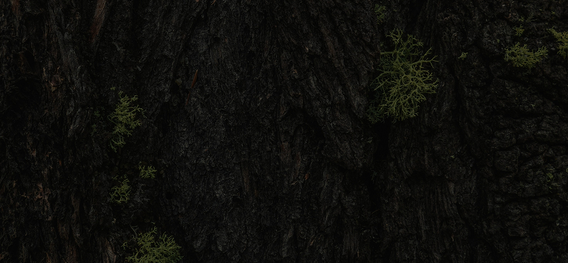
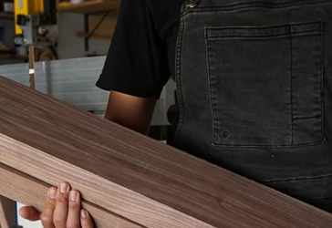
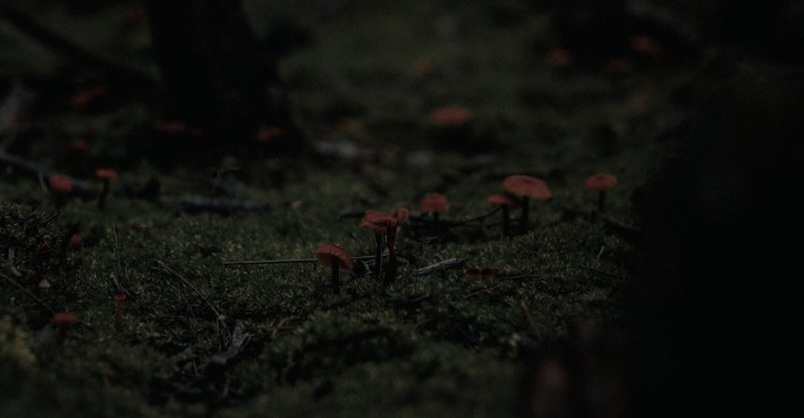
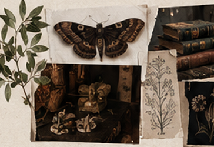
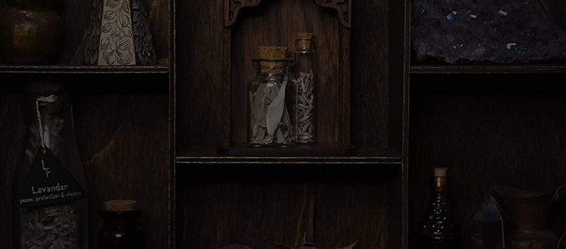

THE
BLACK WILLOW
JOURNAL
BLACK WILLOW
JOURNAL
The Art Behind Black Willow
Explore Explore Explore Explore ExploreA look into the history, universe, and details that make our brand unique
Meet the hands, ideas, and little details that bring each piece to life
A glimpse into the making of a piece, from the initial idea to its first shapes
A little collection of things that feel like Black Willow
It's a little world made of ideas, hands, and extraordinary things
Discover the stories, materials, and hands behind every creation
MORE THAN JUST A SHOP
BEHIND BLACK WILLOW
The World of Black Willow
From Sketch to Creation
THINGS THAT INSPIRE US
THE ART OF MAKING